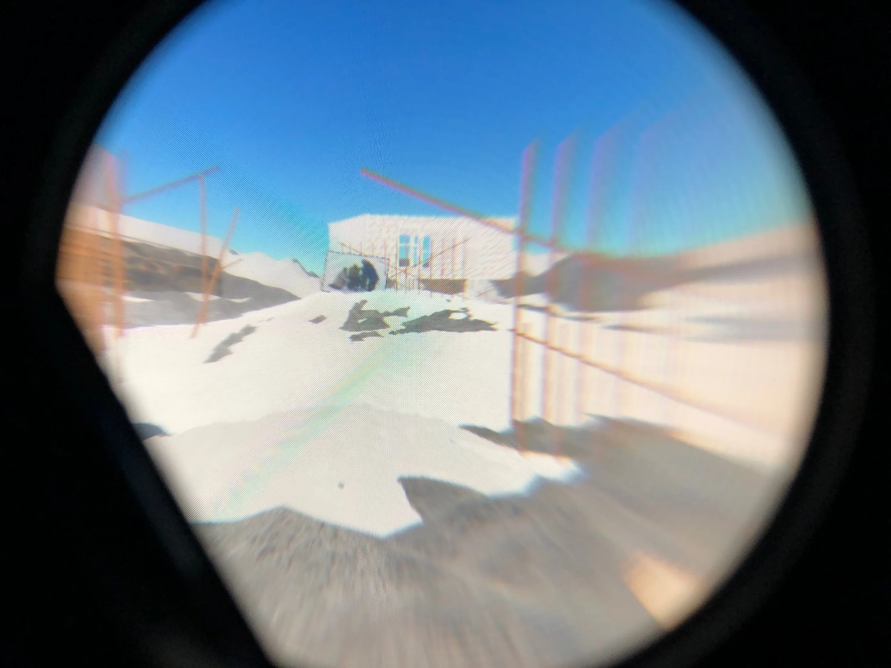
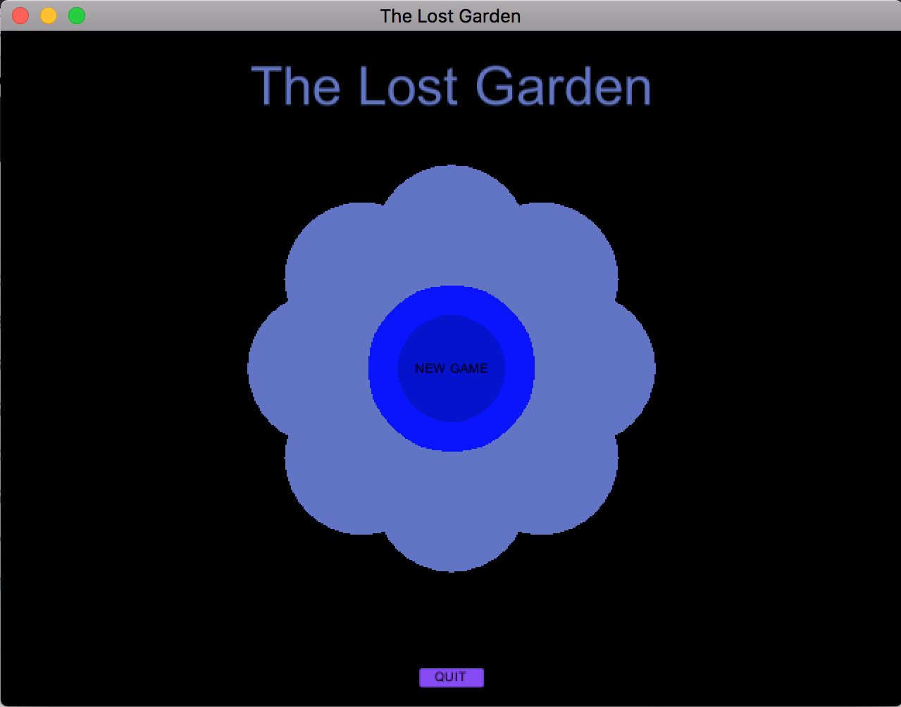

mere human studio
☆ mere human studio is the technical and creative studio of jessa gillespie, focused on aiding artists, educators, and nonprofits in their digital needs.
past projects have included web development, game development, and virtual reality development.
email jessagillespie@gmail.com for a full portfolio.
☆ i engineered the interactive web edition of Dust to Earth, a play by shirley graham du bois. the project was facilitated by walter gordon and funded by a $70,000 grant from the National Endowment for the Humanities.
☆ i designed and developed the website for the Intersections of Gender Researcher Directory at the University of Alberta.

☆ i developed virtual reality installations for Brad Necyk's exhibition Telling Stories Otherwise. a link to the body of work can be found here.

☆ i co-developed 3D assets, textures, and environment for The Lost Garden, a game built in Unity and available on itch.io here. the game was co-created with Scott Smallwood and Nicolás Arnáez.